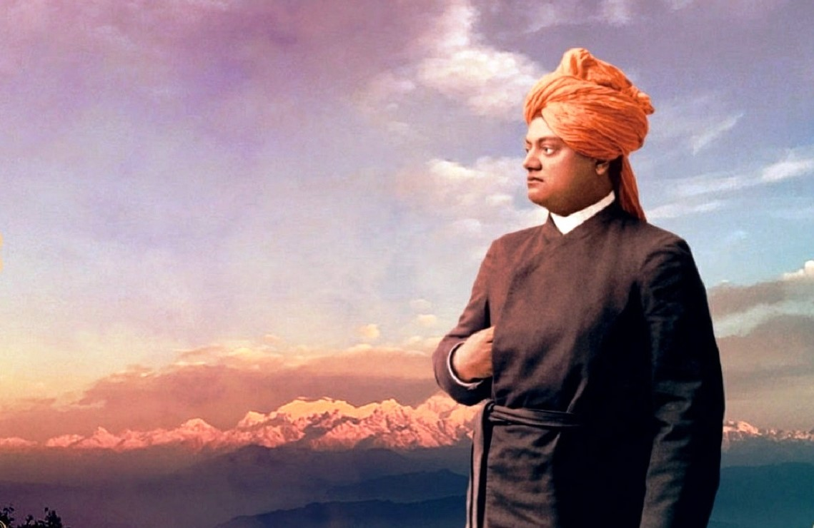

SWAMI VIVEKANANDA
"Arise awake and stop not until the goal is reached."
-Swami Vivekananda

Swami Vivekananda(12 January 1863 – 4 July 1902)
, born Narendranath Datta was an Indian Hindu monk, philosopher, author, religious teacher, and the chief disciple of the Indian mystic Ramakrishna. He was a key figure in the introduction of Vedanta and Yoga to the Western world; and is credited with raising interfaith awareness, and bringing Hinduism to the status of a major world religion. Vivekananda became a popular figure after the 1893 Parliament of Religions in Chicago, where he began his famous speech with the words, "Sisters and brothers of America...," before introducing Hinduism to Americans. He was so impactful at the Parliament that an American newspaper described him as: “an orator by divine right and undoubtedly the greatest figure at the Parliament”. After great success at the Parliament, in the subsequent years, Vivekananda delivered hundreds of lectures across the United States, England and Europe, disseminating the core tenets of Hindu philosophy, and founded the Vedanta Society of New York and the Vedanta Society of San Francisco (now Vedanta Society of Northern California), both of which became the foundations for Vedanta Societies in the West.
The man who symbolizes immense energy, courage and enthusiasm, Swami Vivekananda is not just merely a name, he was himself an institution. In a short span of lifetime his words inspire us in a such an extent that even after so many years of death, Vivekananda still remains in our hearts. With his futuristic vision he could understand that the country lives in discrimination. His teaching describes words against inequity on the basis of gender, religion, cast and creed. He was in pain seeing how women have been treated in our country. Vivekananda said women are the real strength of society and wanted women to be educated and independent. He was a true believer of women empowerment.
Narendranath told if one wants to see the real India he has to walk through its streets. Vivekananda walked almost the whole country by foot as he believed human life is the supreme and superior of everything and he wanted to use his life to the fullest. His visions on modern India Today the country is being smashed under the burden of poverty, unemployment, illiteracy, starvation and the list is endless. Sometimes countrymen feel helpless but is it unachievable dream of becoming great?
Swamiji said a simple but significant "no" as the monk preached all the strength are crave for is within ourselves. He said, if we can overcome the pessimistic attitude we can do wonders. He advised to aim higher, work harder and not be scared of failure.
The tale of Chicago
In Chicago, at the Parliament of the World's Religions held on September, 1893, Swami Vivekananda represented India and Hinduism. It was the first Parliament of the World's Religions and joined by the delegates from all over the world. Swami Vivekananda gave a speech on the importance of abolishing fanaticism in all forms, a relevant issue the world and one of the oldest countries India was facing. Vivekananda received a standing ovation for two minutes after finishing the speech which established him as the greatest figure in the Parliament of World Religions and India as the mother of religions.
Message to the youth
Swami taught the world the importance of hard labour and that it is the only way one can achieve a goal. He said, one has to take the whole responsibility on one's shoulders. "Work as if on each of you depended the whole work. Fifty centuries are looking on you, the future of India depends on you. Work on." He told to see the work for the country not to see as a favour but an obligation. "So long as the millions live in hunger and ignorance, I hold every man a traitor who, having been educated at their expense, pays not the least heed to them! Vivekananda taught to be free from jealousy and suspicion and help people who want to be good. His wrote to one of his disciples, "Follow me, if you will, by being intensely sincere, perfectly unselfish, and, above all, by being perfectly pure. My blessings go with you. In this short life there is no time for the exchange of compliments. We can compare notes and compliment each other to our hearts' content after the battle is finished. Now, do not talk; work, work, work..."